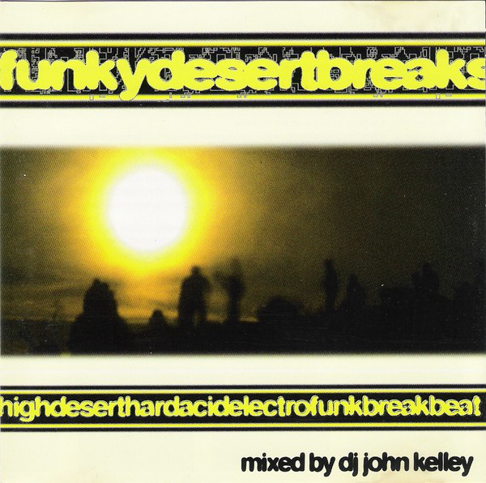

Los Chemical Breaks surgieron antes de que los Breaks se convirtieran en Breaks. Simplemente no los llamaban Chemical Breaks. Los primeros Breaks provenían del Acid House, generalmente como simples líneas de acid con viejos samples de batería en lugar de un bombo de 808 en bucle, o como remezclas de Acid House (o mezclas de Chill Out o Industrial; eso ocurría a veces, por ejemplo, en Meat Beat Manifesto). La introducción de breakbeats en el Acid le dio cierta variedad, pero aún se llamaba Acid House en aquella época.
Chemical Breaks emerged before Breaks became Breaks. They just weren't called Chemical Breaks yet. The earliest Breaks came out of Acid House, usually as simple acid lines with old drum break samples instead of a looping 808 kick, or as Acid House remixes (or Chill Out or Industrial mixes; that happened sometimes too, for example with Meat Beat Manifesto). Adding breakbeats into Acid gave it some variety, but it was still called Acid House at the time.
Las nuevas escenas y géneros no suelen surgir de las existentes de inmediato. Existe un período de solapamiento, una era de diagramas de Venn donde un nuevo sonido puede considerarse parte de uno antiguo hasta que lo adopta una segunda generación de observadores imparciales, con la ayuda de un marketing atractivo. Esto puede tardar entre uno y tres años, dependiendo de la popularidad del sonido (los géneros más populares se fragmentan más rápidamente, debido al volumen). Así que decidir cuándo el Acid House se convirtió en Breaks con Acid, que finalmente se convirtió en Acid Breaks, es un argumento académico que a nadie le importó en aquel momento y nadie tiene una respuesta definitiva. Cuando Acid Breaks surgió como algo propio, ya no se usaba solo acid, sino cualquier sintetizador que pudiera ofrecer el sonido líquido y gomoso del Roland TB-303, y cuando no podían encontrar uno, usaban arpegiación o puertas para aproximarse a los efectos psicodélicos, funky, skippety, skip-hop y zumbantes del Acid sin mucha desviación.
New scenes and genres don't usually break off from existing ones right away. There's an overlap period, a Venn-diagram era where a new sound can be considered part of an old one until a second generation of impartial observers adopts it, helped along by some catchy marketing. This can take anywhere from one to three years, depending on how popular the sound is (more popular genres fragment faster, simply due to volume). So deciding exactly when Acid House turned into Breaks with Acid, which eventually became Acid Breaks, is an academic argument nobody cared about at the time, and nobody has a definitive answer. By the time Acid Breaks emerged as its own thing, it wasn't just using acid anymore, but merely any synth that could deliver that liquid, rubbery Roland TB-303 sound — and when they couldn't find one, they used arpeggiation or gates to approximate Acid's trippy, funky, skippety skip-hop whirrbly whobbly effects without much deviation.
Esta fue una característica tan distintiva que llegó a conocerse como Chemical Breaks (porque no era estrictamente ácido sino sintético), y debe mencionarse que el nombre no proviene de los Chemical Brothers porque en ese momento se llamaban Dust Brothers (tuvieron que cambiar su nombre cuando los verdaderos Dust Brothers, de Beastie Boys y Fight Club, se opusieron) y fue una invención decididamente estadounidense, específicamente el colectivo Moontribe de las legendarias raves funky del desierto de California que coincidieron con el auge de los neohippies, el contraculturalismo, las declaraciones radicales de acrobacias artísticas y el primer Burning Man.
This was such a distinctive feature that it came to be known as Chemical Breaks (because it wasn't strictly acid, but it was synthetic), and it should be noted that the name doesn't come from the Chemical Brothers, since at the time they were still called the Dust Brothers (they had to change their name when the real Dust Brothers, of Beastie Boys and Fight Club fame, objected) — it was a distinctly American invention, specifically the Moontribe collective from the legendary funky desert raves in California that coincided with the rise of neo-hippies, counterculturalism, radical artistic-stunt statements, and the first Burning Man.

El Chemical Breaks explotó con todo el rave a finales de los 90, y grupos como The Crystal Method, Propellerheads, Chemical Brothers y Uberzone se convirtieron en nombres conocidos, ya sea a través de recopilaciones de Mortal Kombat o de bandas sonoras de películas de acción. Esto convierte a Chemical Breaks en uno de los géneros que acompañan a la "electrónica". Pero no fue el género de Breakbeat con mayor éxito comercial; ese éxito se lo llevaría su sucesor, el Big Beat.
Chemical Breaks blew up when everything rave did in the late 90s, and acts like The Crystal Method, Propellerheads, Chemical Brothers, and Uberzone became household names, whether through Mortal Kombat compilations or action-movie soundtracks. This makes Chemical Breaks one of the genres that rides alongside "electronica." But it wasn't the most commercially successful Breakbeat genre — that title would go to its successor, Big Beat.